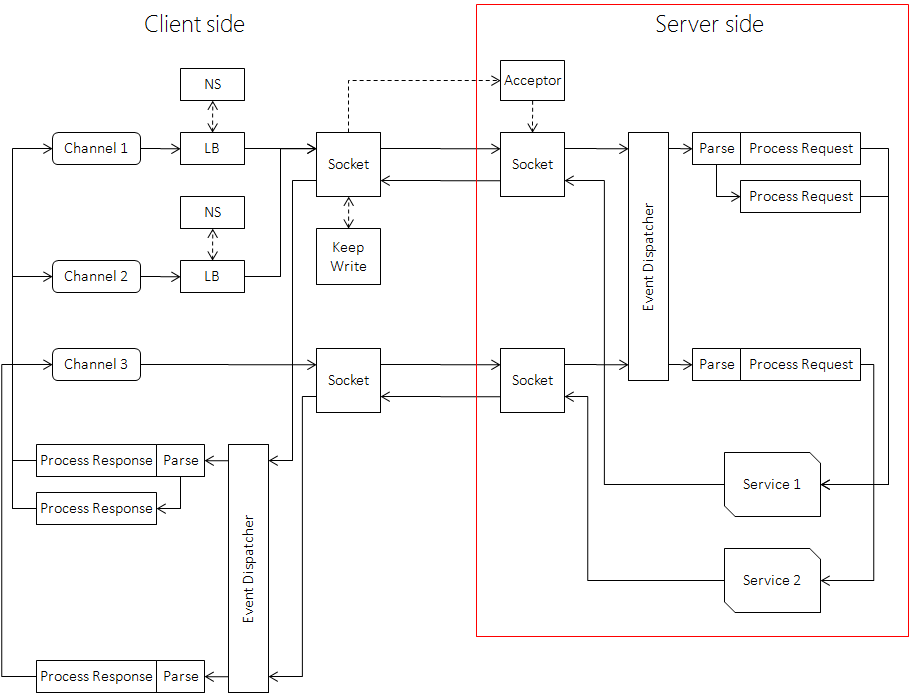

下面以 Echo 为例说明 brpc Server 的定义与使用方法。
填写 proto 文件
请求、回复、服务的接口均定义在 proto 文件中。
# 告诉protoc要生成C++ Service基类，如果是java或python，则应分别修改为java_generic_services和py_generic_services
option cc_generic_services = true;
message EchoRequest {
required string message = 1;
}
message EchoResponse {
required string message = 1;
}
service EchoService {
rpc Echo(EchoRequest) returns (EchoResponse);
}protobuf 的更多用法请阅读其官方文档。
实现生成的 Service 接口
protoc 运行后会生成 echo.pb.cc 和 echo.pb.h 文件，你得 include echo.pb.h，实现其中的 EchoService 基类：
#include "echo.pb.h"
...
class MyEchoService : public EchoService {
public:
void Echo(::google::protobuf::RpcController* cntl_base,
const ::example::EchoRequest* request,
::example::EchoResponse* response,
::google::protobuf::Closure* done) {
// 这个对象确保在return时自动调用done->Run()
brpc::ClosureGuard done_guard(done);
brpc::Controller* cntl = static_cast<brpc::Controller*>(cntl_base);
// 填写response
response->set_message(request->message());
}
};Service 在插入 brpc::Server 后才可能提供服务。
当客户端发来请求时，Echo() 会被调用。参数的含义分别是：
- controller：在 brpc 中可以静态转为
brpc::Controller（前提是代码运行在brpc::Server中），包含了所有 request 和 response 之外的参数集合，具体接口查阅controller.h。 - request：请求，只读的，来自 client 端的数据包。
- response：回复，需要用户填充，如果存在
required字段没有被设置，该次调用会失败。 - done：由框架创建，递给服务回调，包含了调用服务回调后的后续动作，包括检查 response 正确性、序列化、打包、发送等逻辑。
不管成功失败，done->Run() 必须在请求处理完成后被用户调用一次。
为什么框架不自己调用 done->Run()？这是为了允许用户把 done 保存下来，在服务回调之后的某事件发生时再调用，即实现异步 Service。
强烈建议使用 ClosureGuard 确保 done->Run() 被调用，即在服务回调开头的那句：
brpc::ClosureGuard done_guard(done);不管在中间还是末尾脱离服务回调，都会使 done_guard 析构，其中会调用 done->Run()。这个机制称为 RAII。没有这个的话你得在每次 return 前都加上 done->Run()，极易忘记。
在异步 Service 中，退出服务回调时请求未处理完成，done->Run() 不应被调用，done 应被保存下来供以后调用。乍看起来，这里并不需要用 ClosureGuard。但在实践中，异步 Service 照样会因各种原因跳出回调，如果不使用 ClosureGuard，一些分支很可能会在 return 前忘记调用 done->Run()，所以我们也建议在异步 Service 中使用 done_guard。与同步 Service 不同的是，为了避免正常脱离函数时 done->Run() 也被调用，你可以调用 done_guard.release() 来释放其中的 done。
一般来说，同步 Service 和异步 Service 分别按如下代码处理 done：
class MyFooService : public FooService {
public:
// 同步服务
void SyncFoo(::google::protobuf::RpcController* cntl_base,
const ::example::EchoRequest* request,
::example::EchoResponse* response,
::google::protobuf::Closure* done) {
brpc::ClosureGuard done_guard(done);
...
}
// 异步服务
void AsyncFoo(::google::protobuf::RpcController* cntl_base,
const ::example::EchoRequest* request,
::example::EchoResponse* response,
::google::protobuf::Closure* done) {
brpc::ClosureGuard done_guard(done);
...
done_guard.release();
}
};ClosureGuard 的接口如下：
// RAII: Call Run() of the closure on destruction.
class ClosureGuard {
public:
ClosureGuard();
// Constructed with a closure which will be Run() inside dtor.
explicit ClosureGuard(google::protobuf::Closure* done);
// Call Run() of internal closure if it's not NULL.
~ClosureGuard();
// Call Run() of internal closure if it's not NULL and set it to `done'.
void reset(google::protobuf::Closure* done);
// Set internal closure to NULL and return the one before set.
google::protobuf::Closure* release();
};标记当前调用为失败
调用 Controller.SetFailed() 可以把当前调用设置为失败，当发送过程出现错误时，框架也会调用这个函数。用户一般是在服务的 CallMethod 里调用这个函数，比如某个处理环节出错，SetFailed() 后确认 done->Run() 被调用了就可以跳出函数了（若使用了 ClosureGuard，跳出函数时会自动调用 done，不用手动调用）。Server 端的 done 的逻辑主要是发送 response 回 client，当其发现用户调用了 SetFailed() 后，会把错误信息送回 client。client 收到后，它的 Controller::Failed() 会为 true（成功时为 false），Controller::ErrorCode() 和 Controller::ErrorText() 则分别是错误码和错误信息。
用户可以为 http 访问设置 status-code，在 server 端一般是调用 controller.http_response().set_status_code()，标准的 status-code 定义在 http_status_code.h 中。Controller.SetFailed() 也会设置 status-code，值是与错误码含义最接近的 status-code，没有相关的则填 500 错误（brpc::HTTP_STATUS_INTERNAL_SERVER_ERROR）。如果你要覆盖 status_code，设置代码一定要放在 SetFailed() 之后，而不是之前。
获取 Client 的地址
controller->remote_side() 可获得发送该请求的 client 地址和端口，类型是 butil::EndPoint。如果 client 是 nginx，remote_side() 是 nginx 的地址。要获取真实 client 的地址，可以在 nginx 里设置 proxy_header ClientIp $remote_addr;，在 rpc 中通过 controller->http_request().GetHeader("ClientIp") 获得对应的值。
打印方式：
LOG(INFO) << "remote_side=" << cntl->remote_side();
printf("remote_side=%s\n", butil::endpoint2str(cntl->remote_side()).c_str());获取 Server 的地址
controller->local_side() 获得 server 端的地址，类型是 butil::EndPoint。打印方式：
LOG(INFO) << "local_side=" << cntl->local_side();
printf("local_side=%s\n", butil::endpoint2str(cntl->local_side()).c_str());异步 Service
异步 Service 即 done->Run() 在 Service 回调之外被调用。
有些 server 以等待后端服务返回结果为主，且处理时间特别长，为了及时地释放出线程资源，更好的办法是把 done 注册到被等待事件的回调中，等到事件发生后再调用 done->Run()。
异步 Service 的最后一行一般是 done_guard.release()，以确保正常退出 CallMethod 时不会调用 done->Run()。完整例子可参考 example/session_data_and_thread_local。
Service 和 Channel 都可以使用 done 来表达后续的操作，但它们是完全不同的，请勿混淆：
- Service 的 done 由框架创建，用户处理请求后调用 done 把 response 发回给 client。
- Channel 的 done 由用户创建，待 RPC 结束后被框架调用以执行用户的后续代码。
在一个会访问下游服务的异步服务中会同时接触两者，容易搞混，请注意区分。
加入 Service
默认构造后的 Server 不包含任何服务，也不会对外提供服务，仅仅是一个对象。
通过如下方法插入你的 Service 实例：
int AddService(google::protobuf::Service* service, ServiceOwnership ownership);若 ownership 参数为 SERVER_OWNS_SERVICE，Server 在析构时会一并删除 Service，否则应设为 SERVER_DOESNT_OWN_SERVICE。
插入 MyEchoService 代码如下：
brpc::Server server;
MyEchoService my_echo_service;
if (server.AddService(&my_echo_service, brpc::SERVER_DOESNT_OWN_SERVICE) != 0) {
LOG(FATAL) << "Fail to add my_echo_service";
return -1;
}Server 启动后你无法再修改其中的 Service。
启动
调用以下 brpc::Server 的接口启动服务：
int Start(const char* ip_and_port_str, const ServerOptions* opt);
int Start(EndPoint ip_and_port, const ServerOptions* opt);
int Start(int port, const ServerOptions* opt);
int Start(const char *ip_str, PortRange port_range, const ServerOptions *opt); // r32009 后增加“localhost:9000”、”cq01-cos-dev00.cq01:8000”、”127.0.0.1:7000” 都是合法的 ip_and_port_str。
options 为 NULL 时所有参数取默认值，如果你要使用非默认值，这么做就行了：
brpc::ServerOptions options; // 包含了默认值
options.xxx = yyy;
...
server.Start(..., &options);一个 server 只能监听一个端口（不考虑 ServerOptions.internal_port），需要监听 N 个端口就起 N 个 Server。
停止
server.Stop(closewait_ms); // closewait_ms实际无效，出于历史原因未删
server.Join();Stop() 不会阻塞，Join() 会。分成两个函数的原因在于当多个 Server 需要退出时，可以先全部 Stop 再一起 Join，如果一个个 Stop/Join，可能得花费 Server 个数倍的等待时间。
不管 closewait_ms 是什么值，server 在退出时会等待所有正在被处理的请求完成，同时对新请求立刻回复 ELOGOFF 错误以防止新请求加入。这么做的原因在于只要 server 退出时仍有处理线程运行，就有访问到已释放内存的风险。如果你的 server”退不掉”，很有可能是由于某个检索线程没结束或忘记调用 done 了。
当 client 看到 ELOGOFF 时，会跳过对应的 server，并在其他 server 上重试对应的请求。所以在一般情况下 brpc 总是”优雅退出”的，重启或上线时几乎不会或只会丢失很少量的流量。
RunUntilAskedToQuit() 函数可以在大部分情况下简化 server 的运转和停止代码。在 server.Start 后，只需如下代码即会让 server 运行直到按到 Ctrl-C：
// Wait until Ctrl-C is pressed, then Stop() and Join() the server.
server.RunUntilAskedToQuit();
// server已经停止了，这里可以写释放资源的代码。Join() 完成后可以修改其中的 Service，并重新 Start。
被 http/h2 访问
使用 Protobuf 的服务通常可以通过 http/h2+json 访问，存于 body 的 json 串可与对应 protobuf 消息相互自动转化。
以 echo server 为例，你可以用 curl 访问这个服务：
# -H 'Content-Type: application/json' is optional
$ curl -d '{"message":"hello"}' http://brpc.baidu.com:8765/EchoService/Echo
{"message":"hello"}提示：也可以指定
Content-Type: application/proto用 http/h2+protobuf 二进制串访问服务，序列化性能更好。
json 与 pb 的相互转化
json 字段通过匹配的名字和结构与 pb 字段一一对应。json 中一定要包含 pb 的 required 字段，否则转化会失败，对应请求会被拒绝。json 中可以包含 pb 中没有定义的字段，但它们会被丢弃而不会存入 pb 的 unknown 字段。
开启选项 -pb_enum_as_number 后，pb 中的 enum 会转化为它的数值而不是名字，比如在 enum MyEnum { Foo = 1; Bar = 2; }; 中，不开启此选项时 MyEnum 类型的字段会转化为 “Foo” 或 “Bar”，开启后为 1 或 2。此选项同时影响 client 发出的请求和 server 返回的回复。由于转化为名字相比数值有更好的前后兼容性，此选项只应用于兼容无法处理 enum 名字的老代码。
兼容早期版本 client
早期的 brpc 允许一个 pb service 被 http 协议访问时不填充 pb 请求，即使里面有 required 字段。一般来说这种 service 会自行解析 http 请求和设置 http 回复，并不会访问 pb 请求。但这也是非常危险的行为，毕竟这是 pb service，但 pb 请求却是未定义的。
这种服务在升级到新版本 rpc 时会遇到障碍，因为 brpc 已不允许这种行为。为了帮助这种服务升级，brpc 允许经过一些设置后不把 http body 自动转化为 pb request（从而可自行处理），方法如下：
brpc::ServiceOptions svc_opt;
svc_opt.ownership = ...;
svc_opt.restful_mappings = ...;
svc_opt.allow_http_body_to_pb = false; // 关闭http/h2 body至pb request的自动转化
server.AddService(service, svc_opt);如此设置后 service 收到 http/h2 请求后不会尝试把 body 转化为 pb 请求，所以 pb 请求总是未定义状态，用户得在 cntl->request_protocol() == brpc::PROTOCOL_HTTP || cntl->request_protocol() == brpc::PROTOCOL_H2 成立时自行解析 body。
相应地，当 cntl->response_attachment() 不为空且 pb 回复不为空时，框架不再报错，而是直接把 cntl->response_attachment() 作为回复的 body。这个功能和设置 allow_http_body_to_pb 与否无关。如果放开自由度导致过多的用户犯错，可能会有进一步的调整。
协议支持
server 端会自动尝试其支持的协议，无需用户指定。cntl->protocol() 可获得当前协议。server 能从一个 listen 端口建立不同协议的连接，不需要为不同的协议使用不同的 listen 端口；一个连接上也可以传输多种协议的数据包，但一般不会这么做（也不建议）。支持的协议有：
- 百度标准协议 baidu_std，默认启用。
- 流式 RPC 协议 streaming_rpc，默认启用。
- http/1.0 和 http/1.1 协议，显示为 “http”，默认启用。
- http/2 和 gRPC 协议，显示为 “h2c”（未加密）或 “h2”（加密），默认启用。
- RTMP 协议，显示为 “rtmp”，默认启用。
- hulu-pbrpc 协议，显示为 “hulu_pbrpc”，默认启用。
- sofa-pbrpc 协议，显示为 “sofa_pbrpc”，默认启用。
- nova_pbrpc、public_pbrpc、nshead_mcpack 等协议默认不启用，需要通过
ServerOptions.nshead_service设置对应的 ServiceAdaptor 才能开启。 - 和 UB 相关的协议请参考官方文档中实现 NsheadService 的说明。
如果你有更多的协议需求，可以联系我们。
fork without exec
一般来说，fork 出的子进程应尽快调用 exec 以重置所有状态，中间只应调用满足 async-signal-safe 的函数。这么使用 fork 的 brpc 程序在之前的版本也不会有问题。
但在一些场景中，用户想直接运行 fork 出的子进程，而不调用 exec。由于 fork 只复制其调用者的线程，其余线程便随之消失了。对应到 brpc 中，bvar 会依赖一个 sampling_thread 采样各种信息，在 fork 后便消失了，现象是很多 bvar 归零。
最新版本的 brpc 会在 fork 后重建这个线程（如有必要），从而使 bvar 在 fork 后能正常工作，再次 fork 也可以。已知问题是 fork 后 cpu profiler 不正常。然而，这并不意味着用户可随意地 fork，不管是 brpc 还是上层应用都会大量地创建线程，它们在 fork 后不会被重建，因为：
- 大部分 fork 会紧接 exec，浪费了重建。
- 给代码编写带来很多的麻烦和复杂度。
brpc 的策略是按需创建这类线程，同时 fork without exec 必须发生在所有可能创建这些线程的代码之前。具体地说，至少发生在初始化所有 Server/Channel/应用代码之前，越早越好，不遵守这个约定的 fork 会导致程序不正常。另外，不支持 fork without exec 的 lib 相当普遍，最好避免这种用法。
常用设置
版本
Server.set_version(...) 可以为 server 设置一个名称+版本，可通过 /version 内置服务访问到。虽然叫做 “version”，但设置的值请包含服务名，而不仅仅是一个数字版本。
关闭闲置连接
如果一个连接在 ServerOptions.idle_timeout_sec 对应的时间内没有读取或写出数据，则被视为”闲置”而被 server 主动关闭。默认值为 -1，代表不开启。
打开 -log_idle_connection_close 后关闭前会打印一条日志：
| Name | Value | Description | Defined At |
|---|---|---|---|
| log_idle_connection_close | false | Print log when an idle connection is closed | src/brpc/socket.cpp |
pid_file
如果设置了此字段，Server 启动时会创建一个同名文件，内容为进程号。默认为空。
在每条日志后打印 hostname
打开 -log_hostname 后每条日志后都会带本机名称，如果所有的日志需要汇总到一起进行分析，这个功能可以帮助你了解某条日志来自哪台机器。此功能只对 butil/logging.h 中的日志宏有效。
打印 FATAL 日志后退出程序
打开 -crash_on_fatal_log 后，如果程序使用 LOG(FATAL) 打印了异常日志或违反了 CHECK 宏中的断言，那么程序会在打印日志后 abort，这一般也会产生 coredump 文件，默认不打开。这个开关可在对程序的压力测试中打开，以确认程序没有进入过严重错误的分支。此功能只对 butil/logging.h 中的日志宏有效，glog 默认在 FATAL 日志时 crash。
注意：一般的惯例是，ERROR 表示可容忍的错误，FATAL 代表不可逆转的错误。
最低日志级别
只有不低于 -minloglevel 指定的日志级别的日志才会被打印。这个选项可以动态修改。设置值和日志级别的对应关系：0=INFO 1=NOTICE 2=WARNING 3=ERROR 4=FATAL，默认为 0。此功能由 butil/logging.h 和 glog 各自实现，为同名选项。
未打印日志的开销只是一次 if 判断，也不会评估参数（比如某个参数调用了函数，日志不打，这个函数就不会被调用）。如果日志最终打印到自定义 LogSink，那么还要经过 LogSink 的过滤。
归还空闲内存至系统
选项 -free_memory_to_system_interval 表示每过这么多秒就尝试向系统归还空闲内存，<= 0 表示不开启，默认值为 0，若开启建议设为 10 及以上的值。此功能支持 tcmalloc，之前程序中对 MallocExtension::instance()->ReleaseFreeMemory() 的定期调用可改成设置此选项。
打印发送给 client 的错误
server 的框架部分一般不针对个别 client 打印错误日志，因为当大量 client 出现错误时，可能导致 server 高频打印日志而严重影响性能。但有时为了调试问题，或就是需要让 server 打印错误，打开参数 -log_error_text 即可。
定制延时的分位值
显示的服务延时分位值默认为 80（曾经为 50）、90、99、99.9、99.99，前三项可分别通过 -bvar_latency_p1、-bvar_latency_p2、-bvar_latency_p3 三个 gflags 定制。
以下是正确的设置：
-bvar_latency_p3=97 # p3从默认99修改为97
-bvar_latency_p1=60 -bvar_latency_p2=80 -bvar_latency_p3=95以下是错误的设置：
-bvar_latency_p3=100 # 设置值必须在[1,99]闭区间内，gflags解析会失败
-bvar_latency_p1=-1 # 同上设置栈大小
brpc 的 Server 是运行在 bthread 之上，默认栈大小为 1MB，而 pthread 默认栈大小为 10MB，所以在 pthread 上正常运行的程序，在 bthread 上可能遇到栈不足。
可设置如下的 gflag 以调整栈的大小：
--stack_size_normal=10000000 # 表示调整栈大小为10M左右
--tc_stack_normal=1 # 默认为8，表示每个worker缓存的栈的个数(以加快分配速度)，size越大，缓存数目可以适当调小(以减少内存占用)注意：不是说程序 coredump 就意味着”栈不够大”，只是因为这个试起来最容易，所以优先排除掉可能性。事实上百度内如此多的应用也很少碰到栈不够大的情况。
限制最大消息
为了保护 server 和 client，当 server 收到的 request 或 client 收到的 response 过大时，server 或 client 会拒收并关闭连接。此最大尺寸由 -max_body_size 控制，单位为字节。
超过最大消息时会打印如下错误日志：
FATAL: 05-10 14:40:05: * 0 src/brpc/input_messenger.cpp:89] A message from 127.0.0.1:35217(protocol=baidu_std) is bigger than 67108864 bytes, the connection will be closed. Set max_body_size to allow bigger messagesprotobuf 中有类似的限制，出错时会打印如下日志：
FATAL: 05-10 13:35:02: * 0 google/protobuf/io/coded_stream.cc:156] A protocol message was rejected because it was too big (more than 67108864 bytes). To increase the limit (or to disable these warnings), see CodedInputStream::SetTotalBytesLimit() in google/protobuf/io/coded_stream.h.brpc 移除了 protobuf 中的限制，全交由此选项控制，只要 -max_body_size 足够大，用户就不会看到错误日志。此功能对 protobuf 的版本没有要求。
压缩
set_response_compress_type() 设置 response 的压缩方式，默认不压缩。
注意：附件不会被压缩。
支持的压缩方法有：
brpc::CompressTypeSnappy：snappy 压缩，压缩和解压显著快于其他压缩方法，但压缩率最低。brpc::CompressTypeGzip：gzip 压缩，显著慢于 snappy，但压缩率高。brpc::CompressTypeZlib：zlib 压缩，比 gzip 快 10%~20%，压缩率略好于 gzip，但速度仍明显慢于 snappy。
更具体的性能对比见 client 文档中的压缩一节。
附件
baidu_std 和 hulu_pbrpc 协议支持传递附件，这段数据由用户自定义，不经过 protobuf 的序列化。站在 server 的角度，设置在 Controller.response_attachment() 的附件会被 client 端收到，Controller.request_attachment() 则包含了 client 端送来的附件。
附件不会被框架压缩。
在 http 协议中，附件对应 message body，比如要返回的数据就设置在 response_attachment() 中。
开启 SSL
要开启 SSL，首先确保代码依赖了最新的 openssl 库。如果 openssl 版本很旧，会有严重的安全漏洞，支持的加密算法也少，违背了开启 SSL 的初衷。然后设置 ServerOptions.ssl_options，具体见 ssl_options.h：
// Certificate structure
struct CertInfo {
// Certificate in PEM format.
// Note that CN and alt subjects will be extracted from the certificate,
// and will be used as hostnames. Requests to this hostname (provided SNI
// extension supported) will be encrypted using this certifcate.
// Supported both file path and raw string
std::string certificate;
// Private key in PEM format.
// Supported both file path and raw string based on prefix:
std::string private_key;
// Additional hostnames besides those inside the certificate. Wildcards
// are supported but it can only appear once at the beginning (i.e. *.xxx.com).
std::vector<std::string> sni_filters;
};
// SSL options at server side
struct ServerSSLOptions {
// Default certificate which will be loaded into server. Requests
// without hostname or whose hostname doesn't have a corresponding
// certificate will use this certificate. MUST be set to enable SSL.
CertInfo default_cert;
// Additional certificates which will be loaded into server. These
// provide extra bindings between hostnames and certificates so that
// we can choose different certificates according to different hostnames.
// See `CertInfo' for detail.
std::vector<CertInfo> certs;
// When set, requests without hostname or whose hostname can't be found in
// any of the cerficates above will be dropped. Otherwise, `default_cert'
// will be used.
// Default: false
bool strict_sni;
// ... Other options
};验证 client 身份
如果 server 端要开启验证功能，需要实现 Authenticator 中的接口：
class Authenticator {
public:
// Implement this method to verify credential information `auth_str' from
// `client_addr'. You can fill credential context (result) into `*out_ctx'
// and later fetch this pointer from `Controller'.
// Returns 0 on success, error code otherwise
virtual int VerifyCredential(const std::string& auth_str,
const base::EndPoint& client_addr,
AuthContext* out_ctx) const = 0;
};
class AuthContext {
public:
const std::string& user() const;
const std::string& group() const;
const std::string& roles() const;
const std::string& starter() const;
bool is_service() const;
};server 的验证是基于连接的。当 server 收到连接上的第一个请求时，会尝试解析出其中的身份信息部分（如 baidu_std 里的 auth 字段、HTTP 协议里的 Authorization 头），然后附带 client 地址信息一起调用 VerifyCredential。若返回 0，表示验证成功，用户可以把验证后的信息填入 AuthContext，后续可通过 controller->auth_context() 获取，用户不需要关心其分配和释放。否则表示验证失败，连接会被直接关闭，client 访问失败。
后续请求默认通过验证，没有认证开销。
把实现的 Authenticator 实例赋值到 ServerOptions.auth，即开启验证功能，需要保证该实例在整个 server 运行周期内都有效，不能被析构。
worker 线程数
设置 ServerOptions.num_threads 即可，默认是 cpu core 的个数（包含超线程的）。
注意：ServerOptions.num_threads 仅仅是个提示。
你不能认为 Server 就用了这么多线程，因为进程内的所有 Server 和 Channel 会共享线程资源，线程总数是所有 ServerOptions.num_threads 和 -bthread_concurrency 中的最大值。比如一个程序内有两个 Server，num_threads 分别为 24 和 36，bthread_concurrency 为 16，那么 worker 线程数为 max(24, 36, 16) = 36。这不同于其他 RPC 实现中往往是加起来。
Channel 没有相应的选项，但可以通过选项 -bthread_concurrency 调整。
另外，brpc 不区分 IO 线程和处理线程。brpc 知道如何编排 IO 和处理代码，以获得更高的并发度和线程利用率。
限制最大并发
“并发”可能有两种含义，一种是连接数，一种是同时在处理的请求数。这里提到的是后者。
在传统的同步 server 中，最大并发不会超过工作线程数，设定工作线程数量一般也限制了并发。但 brpc 的请求运行于 bthread 中，M 个 bthread 会映射至 N 个 worker 中（一般 M 大于 N），所以同步 server 的并发度可能超过 worker 数量。另一方面，虽然异步 server 的并发不受线程数控制，但有时也需要根据其他因素控制并发量。
brpc 支持设置 server 级和 method 级的最大并发，当 server 或 method 同时处理的请求数超过并发度限制时，它会立刻给 client 回复 brpc::ELIMIT 错误，而不会调用服务回调。看到 ELIMIT 错误的 client 应重试另一个 server。这个选项可以防止 server 出现过度排队，或用于限制 server 占用的资源。默认不开启。
为什么超过最大并发要立刻给 client 返回错误而不是排队
当前 server 达到最大并发并不意味着集群中的其他 server 也达到最大并发了，立刻让 client 获知错误，并去尝试另一台 server 在全局角度是更好的策略。
为什么不限制 QPS
QPS 是一个秒级的指标，无法很好地控制瞬间的流量爆发。而最大并发和当前可用的重要资源紧密相关：”工作线程”、”槽位”等，能更好地抑制排队。
另外当 server 的延时较为稳定时，限制并发的效果和限制 QPS 是等价的。但前者实现起来容易多了：只需加减一个代表并发度的计数器。这也是大部分流控都限制并发而不是 QPS 的原因，比如 TCP 中的”窗口”即是一种并发度。
计算最大并发数
最大并发度 = 极限 QPS * 低负载延时（little’s law）
极限 QPS 指的是 server 能达到的最大 qps，低负载延时指的是 server 在没有严重积压请求的前提下时的平均延时。一般的服务上线都会有性能压测，把测得的 QPS 和延时相乘一般就是该服务的最大并发度。
限制 server 级别并发度
设置 ServerOptions.max_concurrency，默认值 0 代表不限制。访问内置服务不受此选项限制。
Server.ResetMaxConcurrency() 可在 server 启动后动态修改 server 级别的 max_concurrency。
限制 method 级别并发度
server.MaxConcurrencyOf("...") = ... 可设置 method 级别的 max_concurrency。也可以通过设置 ServerOptions.method_max_concurrency 一次性为所有的 method 设置最大并发。当 ServerOptions.method_max_concurrency 和 server.MaxConcurrencyOf(“…”)=… 同时被设置时，使用 server.MaxConcurrencyOf() 所设置的值。
ServerOptions.method_max_concurrency = 20; // Set the default maximum concurrency for all methods
server.MaxConcurrencyOf("example.EchoService.Echo") = 10; // Give priority to the value set by server.MaxConcurrencyOf()
server.MaxConcurrencyOf("example.EchoService", "Echo") = 10;
server.MaxConcurrencyOf(&service, "Echo") = 10;
server.MaxConcurrencyOf("example.EchoService.Echo") = "10"; // You can also assign a string value此设置一般发生在 AddService 后，server 启动前。当设置失败时（比如对应的 method 不存在），server 会启动失败同时提示用户修正 MaxConcurrencyOf 设置错误。
当 method 级别和 server 级别的 max_concurrency 都被设置时，先检查 server 级别的，再检查 method 级别的。
注意：没有 service 级别的 max_concurrency。
使用自适应限流算法
实际生产环境中，最大并发未必一成不变，在每次上线前逐个压测和设置服务的最大并发也很繁琐。这个时候可以使用自适应限流算法。
自适应限流是 method 级别的。要使用自适应限流算法，把 method 的最大并发度设置为 “auto” 即可：
// Set auto concurrency limiter for all methods
brpc::ServerOptions options;
options.method_max_concurrency = "auto";
// Set auto concurrency limiter for specific method
server.MaxConcurrencyOf("example.EchoService.Echo") = "auto";关于自适应限流的更多细节可以看官方文档中自适应限流一节。
pthread 模式
用户代码（客户端的 done，服务器端的 CallMethod）默认在栈为 1MB 的 bthread 中运行。但有些用户代码无法在 bthread 中运行，比如：
- JNI 会检查 stack layout 而无法在 bthread 中运行。
- 代码中广泛地使用 pthread local 传递 session 级别全局数据，在 RPC 前后均使用了相同的 pthread local 的数据，且数据有前后依赖性。比如在 RPC 前往 pthread-local 保存了一个值，RPC 后又读出来希望和之前保存的相等，就会有问题。而像 tcmalloc 虽然也使用了 pthread/LWP local，但每次使用之间没有直接的依赖，是安全的。
对于这些情况，brpc 提供了 pthread 模式，开启 -usercode_in_pthread 后，用户代码均会在 pthread 中运行，原先阻塞 bthread 的函数转而阻塞 pthread。
打开 pthread 模式后在性能上的注意点：
- 同步 RPC 都会阻塞 worker pthread，server 端一般需要设置更多的工作线程（
ServerOptions.num_threads），调度效率会略微降低。 - 运行用户代码的仍然是 bthread，只是很特殊，会直接使用 pthread worker 的栈。这些特殊 bthread 的调度方式和其他 bthread 是一致的，这方面性能差异很小。
- bthread 支持一个独特的功能：把当前使用的 pthread worker 让给另一个新创建的 bthread 运行，以消除一次上下文切换。brpc client 利用了这点，从而使一次 RPC 过程中 3 次上下文切换变为了 2 次。在高 QPS 系统中，消除上下文切换可以明显改善性能和延时分布。但 pthread 模式不具备这个能力，在高 QPS 系统中性能会有一定下降。
- pthread 模式中线程资源是硬限，一旦线程被打满，请求就会迅速拥塞而造成大量超时。一个常见的例子是：下游服务大量超时后，上游服务可能由于线程大都在等待下游也被打满从而影响性能。开启 pthread 模式后请考虑设置
ServerOptions.max_concurrency以控制 server 的最大并发。而在 bthread 模式中 bthread 个数是软限，对此类问题的反应会更加平滑。
pthread 模式可以让一些老代码快速尝试 brpc，但我们仍然建议逐渐地把代码改造为使用 bthread local 或最好不用 TLS，从而最终能关闭这个开关。
安全模式
如果你的服务流量来自外部（包括经过 nginx 等转发），你需要注意一些安全因素。
对外隐藏内置服务
内置服务很有用，但包含了大量内部信息，不应对外暴露。有多种方式可以对外隐藏内置服务，比如 http proxy 指定转发路径：nginx 等可配置 URL 的映射关系，下面的配置把访问 /MyAPI 的外部流量映射到 target-server 的 /ServiceName/MethodName。当外部流量尝试访问内置服务（比如说 /status）时，将直接被 nginx 拒绝。
location /MyAPI {
...
proxy_pass http://<target-server>/ServiceName/MethodName$query_string # $query_string是nginx变量，更多变量请查询nginx官方文档
...
}请勿在对外服务上开启 -enable_dir_service 和 -enable_threads_service 两个选项，它们虽然很方便，但会严重泄露服务器上的其他信息。检查对外的 rpc 服务是否打开了这两个开关：
curl -s -m 1 <HOSTNAME>:<PORT>/flags/enable_dir_service,enable_threads_service | awk '{if($3=="false"){++falsecnt}else if($3=="Value"){isrpc=1}}END{if(isrpc!=1||falsecnt==2){print "SAFE"}else{print "NOT SAFE"}}'转义外部可控的 URL
可调用 brpc::WebEscape() 对 url 进行转义，防止恶意 URI 注入攻击。
不返回内部 server 地址
可以考虑对 server 地址做签名。比如在设置 ServerOptions.internal_port 后，server 返回的错误信息中的 IP 信息是其 MD5 签名，而不是明文。
定制 /health 页面
/health 页面默认返回 “OK”，若需定制 /health 页面的内容：先继承 HealthReporter，在其中实现生成页面的逻辑（就像实现其他 http service 那样），然后把实例赋给 ServerOptions.health_reporter，这个实例不被 server 拥有，必须保证在 server 运行期间有效。用户在定制逻辑中可以根据业务的运行状态返回更多样的状态信息。
线程私有变量
百度内的检索程序大量地使用了 thread-local storage（缩写 TLS），有些是为了缓存频繁访问的对象以避免反复创建，有些则是为了在全局函数间隐式地传递状态。你应当尽量避免后者，这样的函数难以测试，不设置 thread-local 变量甚至无法运行。brpc 中有三套机制解决和 thread-local 相关的问题。
session-local
session-local data 与一次 server 端 RPC 绑定：从进入 service 回调开始，到调用 server 端的 done 结束，不管该 service 是同步还是异步处理。session-local data 会尽量被重用，在 server 停止前不会被删除。
设置 ServerOptions.session_local_data_factory 后访问 Controller.session_local_data() 即可获得 session-local 数据。若没有设置，Controller.session_local_data() 总是返回 NULL。
若 ServerOptions.reserved_session_local_data 大于 0，Server 会在提供服务前就创建这么多个数据。
示例用法：
struct MySessionLocalData {
MySessionLocalData() : x(123) {}
int x;
};
class EchoServiceImpl : public example::EchoService {
public:
...
void Echo(google::protobuf::RpcController* cntl_base,
const example::EchoRequest* request,
example::EchoResponse* response,
google::protobuf::Closure* done) {
...
brpc::Controller* cntl = static_cast<brpc::Controller*>(cntl_base);
// Get the session-local data which is created by ServerOptions.session_local_data_factory
// and reused between different RPC.
MySessionLocalData* sd = static_cast<MySessionLocalData*>(cntl->session_local_data());
if (sd == NULL) {
cntl->SetFailed("Require ServerOptions.session_local_data_factory to be set with a correctly implemented instance");
return;
}
...struct ServerOptions {
...
// The factory to create/destroy data attached to each RPC session.
// If this field is NULL, Controller::session_local_data() is always NULL.
// NOT owned by Server and must be valid when Server is running.
// Default: NULL
const DataFactory* session_local_data_factory;
// Prepare so many session-local data before server starts, so that calls
// to Controller::session_local_data() get data directly rather than
// calling session_local_data_factory->Create() at first time. Useful when
// Create() is slow, otherwise the RPC session may be blocked by the
// creation of data and not served within timeout.
// Default: 0
size_t reserved_session_local_data;
};session_local_data_factory 的类型为 DataFactory，你需要实现其中的 CreateData 和 DestroyData。
注意：CreateData 和 DestroyData 会被多个线程同时调用，必须线程安全。
class MySessionLocalDataFactory : public brpc::DataFactory {
public:
void* CreateData() const {
return new MySessionLocalData;
}
void DestroyData(void* d) const {
delete static_cast<MySessionLocalData*>(d);
}
};
int main(int argc, char* argv[]) {
...
MySessionLocalDataFactory session_local_data_factory;
brpc::Server server;
brpc::ServerOptions options;
...
options.session_local_data_factory = &session_local_data_factory;
...server-thread-local
server-thread-local 与一次 service 回调绑定，从进 service 回调开始，到出 service 回调结束。所有的 server-thread-local data 会被尽量重用，在 server 停止前不会被删除。在实现上 server-thread-local 是一个特殊的 bthread-local。
设置 ServerOptions.thread_local_data_factory 后访问 brpc::thread_local_data() 即可获得 thread-local 数据。若没有设置，brpc::thread_local_data() 总是返回 NULL。
若 ServerOptions.reserved_thread_local_data 大于 0，Server 会在启动前就创建这么多个数据。
与 session-local 的区别：
session-local data 得从 server 端的 Controller 获得，server-thread-local 可以在任意函数中获得，只要这个函数直接或间接地运行在 server 线程中。
当 service 是同步时，session-local 和 server-thread-local 基本没有差别，除了前者需要 Controller 创建。当 service 是异步时，且你需要在 done->Run() 中访问到数据，这时只能用 session-local，因为 server-thread-local 在 service 回调外已经失效。
示例用法：
struct MyThreadLocalData {
MyThreadLocalData() : y(0) {}
int y;
};
class EchoServiceImpl : public example::EchoService {
public:
...
void Echo(google::protobuf::RpcController* cntl_base,
const example::EchoRequest* request,
example::EchoResponse* response,
google::protobuf::Closure* done) {
...
brpc::Controller* cntl = static_cast<brpc::Controller*>(cntl_base);
// Get the thread-local data which is created by ServerOptions.thread_local_data_factory
// and reused between different threads.
// "tls" is short for "thread local storage".
MyThreadLocalData* tls = static_cast<MyThreadLocalData*>(brpc::thread_local_data());
if (tls == NULL) {
cntl->SetFailed("Require ServerOptions.thread_local_data_factory "
"to be set with a correctly implemented instance");
return;
}
...struct ServerOptions {
...
// The factory to create/destroy data attached to each searching thread
// in server.
// If this field is NULL, brpc::thread_local_data() is always NULL.
// NOT owned by Server and must be valid when Server is running.
// Default: NULL
const DataFactory* thread_local_data_factory;
// Prepare so many thread-local data before server starts, so that calls
// to brpc::thread_local_data() get data directly rather than calling
// thread_local_data_factory->Create() at first time. Useful when Create()
// is slow, otherwise the RPC session may be blocked by the creation
// of data and not served within timeout.
// Default: 0
size_t reserved_thread_local_data;
};thread_local_data_factory 的类型为 DataFactory，你需要实现其中的 CreateData 和 DestroyData。
注意：CreateData 和 DestroyData 会被多个线程同时调用，必须线程安全。
class MyThreadLocalDataFactory : public brpc::DataFactory {
public:
void* CreateData() const {
return new MyThreadLocalData;
}
void DestroyData(void* d) const {
delete static_cast<MyThreadLocalData*>(d);
}
};
int main(int argc, char* argv[]) {
...
MyThreadLocalDataFactory thread_local_data_factory;
brpc::Server server;
brpc::ServerOptions options;
...
options.thread_local_data_factory = &thread_local_data_factory;
...bthread-local
Session-local 和 server-thread-local 对大部分 server 已经够用。不过在一些情况下，我们需要更通用的 thread-local 方案。在这种情况下，你可以使用 bthread_key_create、bthread_key_destroy、bthread_getspecific、bthread_setspecific 等函数，它们的用法类似 pthread 中的函数。
这些函数同时支持 bthread 和 pthread，当它们在 bthread 中被调用时，获得的是 bthread 私有变量；当它们在 pthread 中被调用时，获得的是 pthread 私有变量。但注意，这里的”pthread 私有变量”不是通过 pthread_key_create 创建的，使用 pthread_key_create 创建的 pthread-local 是无法被 bthread_getspecific 访问到，这是两个独立的体系。由 gcc 的 __thread、c++11 的 thread_local 等声明的私有变量也无法被 bthread_getspecific 访问到。
由于 brpc 会为每个请求建立一个 bthread，server 中的 bthread-local 行为特殊：一个 server 创建的 bthread 在退出时并不删除 bthread-local，而是还回 server 的一个 pool 中，以被其他 bthread 复用。这可以避免 bthread-local 随着 bthread 的创建和退出而不停地构造和析构。这对于用户是透明的。
主要接口：
// Create a key value identifying a slot in a thread-specific data area.
// Each thread maintains a distinct thread-specific data area.
// `destructor', if non-NULL, is called with the value associated to that key
// when the key is destroyed. `destructor' is not called if the value
// associated is NULL when the key is destroyed.
// Returns 0 on success, error code otherwise.
extern int bthread_key_create(bthread_key_t* key, void (*destructor)(void* data));
// Delete a key previously returned by bthread_key_create().
// It is the responsibility of the application to free the data related to
// the deleted key in any running thread. No destructor is invoked by
// this function. Any destructor that may have been associated with key
// will no longer be called upon thread exit.
// Returns 0 on success, error code otherwise.
extern int bthread_key_delete(bthread_key_t key);
// Store `data' in the thread-specific slot identified by `key'.
// bthread_setspecific() is callable from within destructor. If the application
// does so, destructors will be repeatedly called for at most
// PTHREAD_DESTRUCTOR_ITERATIONS times to clear the slots.
// NOTE: If the thread is not created by brpc server and lifetime is
// very short(doing a little thing and exit), avoid using bthread-local. The
// reason is that bthread-local always allocate keytable on first call to
// bthread_setspecific, the overhead is negligible in long-lived threads,
// but noticeable in shortly-lived threads. Threads in brpc server
// are special since they reuse keytables from a bthread_keytable_pool_t
// in the server.
// Returns 0 on success, error code otherwise.
// If the key is invalid or deleted, return EINVAL.
extern int bthread_setspecific(bthread_key_t key, void* data);
// Return current value of the thread-specific slot identified by `key'.
// If bthread_setspecific() had not been called in the thread, return NULL.
// If the key is invalid or deleted, return NULL.
extern void* bthread_getspecific(bthread_key_t key);使用方法：
- 用
bthread_key_create创建一个bthread_key_t，它代表一种 bthread 私有变量。 - 用
bthread_[get|set]specific查询和设置 bthread 私有变量。一个线程中第一次访问某个私有变量返回 NULL。 - 在所有线程都不使用和某个 bthread_key_t 相关的私有变量后再删除它。如果删除了一个仍在被使用的 bthread_key_t，相关的私有变量就泄露了。
static void my_data_destructor(void* data) {
...
}
bthread_key_t tls_key;
if (bthread_key_create(&tls_key, my_data_destructor) != 0) {
LOG(ERROR) << "Fail to create tls_key";
return -1;
}
// in some thread ...
MyThreadLocalData* tls = static_cast<MyThreadLocalData*>(bthread_getspecific(tls_key));
if (tls == NULL) { // First call to bthread_getspecific (and before any bthread_setspecific) returns NULL
tls = new MyThreadLocalData; // Create thread-local data on demand.
CHECK_EQ(0, bthread_setspecific(tls_key, tls)); // set the data so that next time bthread_getspecific in the thread returns the data.
}示例代码：
static void my_thread_local_data_deleter(void* d) {
delete static_cast<MyThreadLocalData*>(d);
}
class EchoServiceImpl : public example::EchoService {
public:
EchoServiceImpl() {
CHECK_EQ(0, bthread_key_create(&_tls2_key, my_thread_local_data_deleter));
}
~EchoServiceImpl() {
CHECK_EQ(0, bthread_key_delete(_tls2_key));
};
...
private:
bthread_key_t _tls2_key;
}
class EchoServiceImpl : public example::EchoService {
public:
...
void Echo(google::protobuf::RpcController* cntl_base,
const example::EchoRequest* request,
example::EchoResponse* response,
google::protobuf::Closure* done) {
...
// You can create bthread-local data for your own.
// The interfaces are similar with pthread equivalence:
// pthread_key_create -> bthread_key_create
// pthread_key_delete -> bthread_key_delete
// pthread_getspecific -> bthread_getspecific
// pthread_setspecific -> bthread_setspecific
MyThreadLocalData* tls2 = static_cast<MyThreadLocalData*>(bthread_getspecific(_tls2_key));
if (tls2 == NULL) {
tls2 = new MyThreadLocalData;
CHECK_EQ(0, bthread_setspecific(_tls2_key, tls2));
}
...常见问题
Q: Fail to write into fd=1865 SocketId=8905@10.208.245.43:54742@8230: Got EOF 是什么意思
A: 一般是 client 端使用了连接池或短连接模式，在 RPC 超时后会关闭连接，server 写回 response 时发现连接已经关了就报这个错。Got EOF 就是指之前已经收到了 EOF（对端正常关闭了连接）。client 端使用单连接模式 server 端一般不会报这个。
Q: Remote side of fd=9 SocketId=2@10.94.66.55:8000 was closed 是什么意思
这不是错误，是常见的 warning，表示对端关掉连接了（EOF）。这个日志有时对排查问题有帮助。
默认关闭，把参数 -log_connection_close 设置为 true 就打开了（支持动态修改）。
Q: 为什么 server 端线程数设了没用
brpc 同一个进程中所有的 server 共用线程，如果创建了多个 server，最终的工作线程数多半是最大的那个 ServerOptions.num_threads。
Q: 为什么 client 端的延时远大于 server 端的延时
可能是 server 端的工作线程不够用了，出现了排队现象。排查方法请参考官方文档中的”高效率排查服务卡顿”。
Q: Fail to open /proc/self/io
有些内核没这个文件，不影响服务正确性，但如下几个 bvar 会无法更新：
process_io_read_bytes_second
process_io_write_bytes_second
process_io_read_second
process_io_write_secondQ: json 串 “[1,2,3]” 没法直接转为 protobuf message
这不是标准的 json。最外层必须是花括号 {} 包围的 json object。
附：Server 端基本流程
